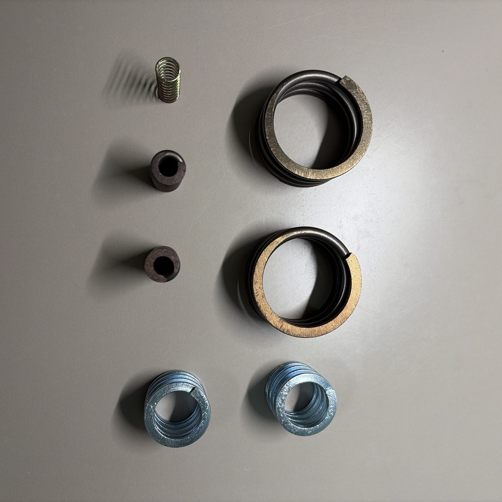
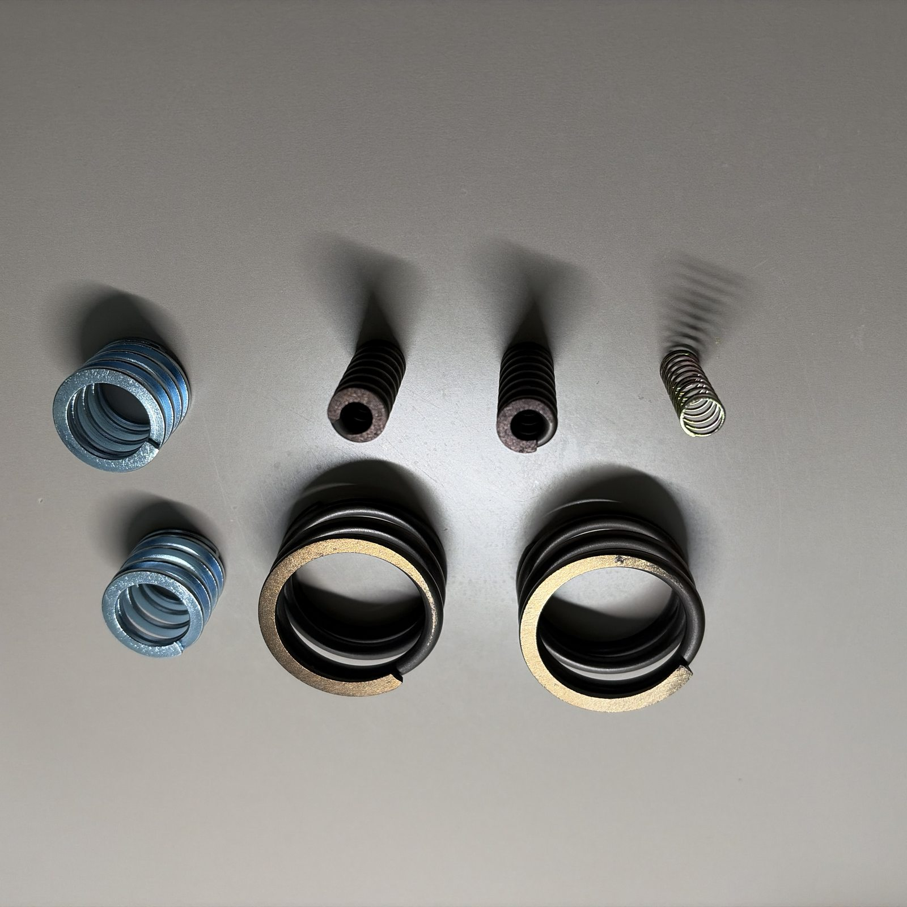

스프링을 선정한 이유
스프링은 자동차와 산업기계에서 흔히 볼 수 있는 부품이다. 하지만 실제 제조 과정은 선재를 감는 것만으로 끝나지 않는다. 제품에 따라 열처리, 끝면 연마, 쇼트피닝, 표면처리 등을 거쳐야 한다.
우리 조는 이 과정이 실제 공장에서 어떻게 이어지는지 확인하기 위해 스프링 제조업체를 방문했다. 현장에서 본 설비와 담당자의 설명을 토대로 공정 흐름을 정리하고, 개선이 필요한 부분도 함께 살펴봤다.
이번 조사에서 특히 눈여겨본 곳은 양 끝면 연마 공정이다. 스프링의 끝면을 평탄하게 만드는 데 필요한 작업이지만, 연삭 과정에서 분진과 소음이 발생한다.
우선 회전 방향·연삭 방식·속도를 바꿨을 때 차이가 생기는지 검토하고, 작업자의 반복 작업을 줄일 수 있는 방법도 함께 알아볼 계획이다.
조사 대상 제품
현장에서 크기와 형상이 다른 여러 스프링을 볼 수 있었다. 같은 코일 형태라도 사용되는 곳에 따라 선경, 코일 직경, 길이, 표면 상태가 달랐다.
스프링은 외력을 받으면 변형되고, 힘이 제거되면 원래 형상으로 돌아가려는 복원력을 낸다. 이때 필요한 하중과 변위가 제품마다 다르므로 소재와 형상뿐 아니라 제조조건도 함께 관리해야 한다.
| 조사 범위 | 코일 스프링의 기본 제조공정 |
|---|---|
| 주요 기능 | 하중 전달, 복원력 제공, 충격 흡수 |
| 주요 관리 항목 | 선경, 코일 직경, 길이, 하중–변위 특성 |
| 소재·치수·허용오차 | 제품별 자료 추가 확인 필요 |


※ 현재 웹사이트는 특정 모델 한 종류의 양산조건이 아니라, 견학에서 파악한 기본 공정 흐름을 정리한 것이다. 제품별 상세 수치는 확보 후 보완할 예정이다.
현장에서 본 제조설비
9월 21일 공장을 방문해 코일 성형기와 열처리 설비, 양 끝면 연마기, 검사 장비 등을 살펴봤다. 아래 사진은 견학 때 촬영한 장비와 제품을 정리한 것이다. 사진을 누르면 크게 볼 수 있다.
기존에 생산했던 제품의 장비 설정값을 저장해 두었다가 다시 불러올 수 있다는 설명을 들었다.
스프링을 압축하거나 당겨 하중과 변위를 측정하고, 결과를 성적서로 출력할 수 있다고 했다.
코일 성형기 작동 영상
제공된 현장 영상 중 코일 성형 장면 두 개를 웹에서 보기 편한 크기로 줄였다. 영상만으로 장비 설정값이나 생산속도를 판단하지는 않았다.
사진·영상: 팀 제공 현장 자료. 공개 게시 전 업체의 촬영·공개 허용 범위를 확인해야 한다.
스프링 제조공정 8단계
견학에서 확인한 기본 공정 순서다. 제품의 용도나 형상에 따라 실제 공정의 순서와 적용 여부는 달라질 수 있다. 각 공정의 온도, 속도, 처리시간 등 구체적인 수치는 아직 확인 중이다.
스프링은 어떻게 검사할까?
현장에서 본 시험기는 스프링에 하중을 가하면서 변위를 측정하는 장비였다. 제품을 지정된 길이만큼 압축했을 때 얼마의 힘이 필요한지 확인하는 데 쓰인다. 검사 결과를 성적서로 출력해 납품처에 제출할 수 있다는 설명도 들었다.
또한 바로 양산에 들어가기보다 먼저 샘플을 만들고 검사한 뒤 생산을 진행한다는 점을 확인했다. 다만 제품별 합격 기준이나 허용오차는 아직 확보하지 못했다.
선경, 코일 직경, 자유장 등
지정 변위에서의 하중 확인
높이, 평탄도, 직각도 확인 필요
성적서와 합격 기준 조사 예정
앞으로 계산할 항목
현장에서는 공정 흐름과 설비를 우선 확인했다. 최종보고서에서는 제품 치수와 설비조건을 추가로 확보해 아래 항목을 계산하고 비교할 예정이다. 아직 계산 결과로 제시할 만한 실측값은 없다.
스프링 상수
선경 d, 평균 코일 직경 D, 유효 권수 Nₐ, 전단탄성계수 G를 알면 원통형 압축 코일 스프링의 이론값을 계산할 수 있다.
연삭휠 원주속도
D는 연삭휠 지름(m), N은 회전수(rpm)다. 휠 규격과 실제 회전수를 확인한 뒤 계산한다.
시간당 이론 생산량
한 개를 만드는 데 t초가 걸릴 때의 단순 환산식이다. 실제 생산량 비교에는 정지시간과 불량률도 고려해야 한다.
※ 위 식은 후속 분석에 사용할 일반적인 기계공학 관계식이며, 현장에서 측정한 결과를 의미하지 않는다.
양 끝면 연마, 무엇을 바꿀 수 있을까?
연마 과정에서 발생하는 분진과 소음
양 끝면 연마는 스프링이 안정적으로 지지되도록 끝면을 평탄하게 만드는 작업이다. 이 과정에서 분진과 소음이 발생하며, 작업자의 반복적인 작업 개입도 부담이 될 수 있다. 현재는 개선 효과를 측정한 단계가 아니라, 비교할 조건과 평가 항목을 정한 상태다.
연삭 조건 변경
- 회전 방향에 따른 차이
- 연삭 방식별 분진·소음 비교
- 회전 속도와 가공시간의 관계
- 조건 변경 후 끝면 품질 유지 여부
반복 작업 일부 보조
- 제품 투입·회수 작업 개선
- 간단한 지그 또는 공급 보조장치
- 설비 도입비와 작업량 비교
- 생산 규모에 맞는 적용 가능성 검토
| 검토 변수 | 확인할 항목 | 현재 상태 |
|---|---|---|
| 연삭 회전 방향 | 분진, 소음, 연삭시간 | 비교 계획 |
| 연삭 방식 | 끝면 상태, 제품 높이, 작업성 | 비교 계획 |
| 연삭 속도 | 분진, 소음, 가공시간, 품질 | 조건 자료 확보 필요 |
| 투입·회수 보조 | 작업자 개입, 비용, 적용 가능성 | 아이디어 검토 |
※ 분진이나 소음이 실제로 얼마나 줄어드는지는 아직 확인되지 않았다. 개선 효과는 조건별 비교 자료를 확보한 뒤 판단할 예정이다.
지금까지의 진행 현황
업체에 처음 연락한 날부터 견학, 보고서 작성, 웹사이트 정리까지 날짜별로 기록했다. 완료한 활동과 앞으로의 작업을 구분해 두었다.
완료한 활동
현재 진행 중
앞으로의 일정
11월 중순~12월 초의 세부 작업일은 팀 내부 계획을 위한 제안 일정이다. 12월 7일 발표와 12월 14일 최종보고서 제출은 수업 일정에 따른다.
팀원
자료 출처와 남은 확인 사항
- 기계가공과 공정실습, 2026학년도 2학기 Option A 팀 중간보고서.
- 2026년 9월 21일 스프링 제조업체 견학 중 관찰한 설비 및 담당자 설명.
- 팀이 제공한 공장 사진, 스프링 시료 사진, 코일 성형기 작동 영상.
- 스프링 상수·연삭속도·생산량 계산에 사용하는 일반 기계공학 관계식.